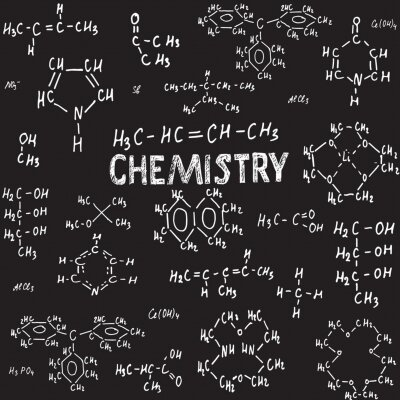

Matemática

Matemática é uma ciência que utiliza conceitos e técnicas para a formação de conhecimentos abstratos e concretos.
Física

Física é uma ciência voltada ao estudo dos fenômenos naturais, baseando-se em teorias e por meio da observação e experimentação.
Química
Química é a ciência que estuda a matéria, sua estrutura, formação e as transformações que ela sofre, levando em consideração a energia envolvida em todo o processo.